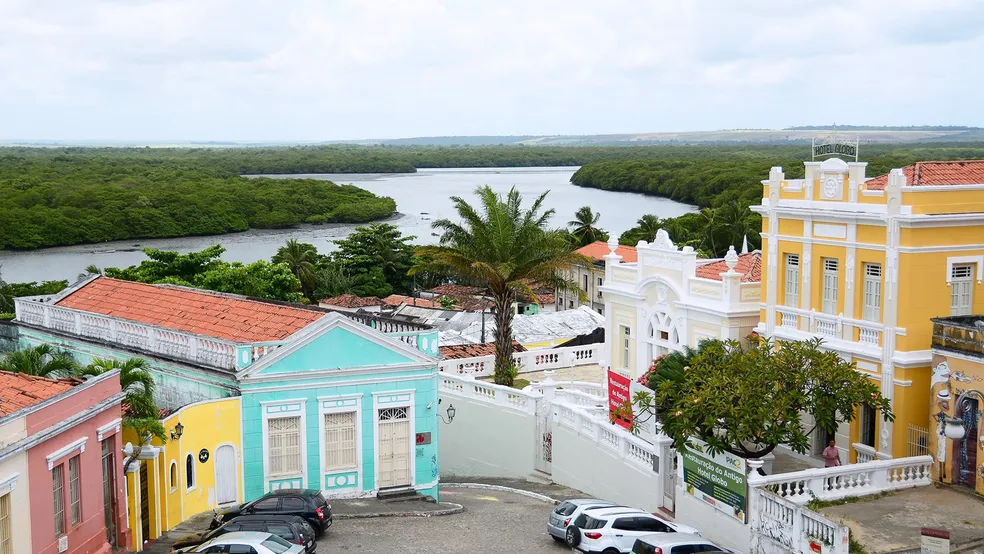

Conheça o Centro de João Pessoa

Descubra o núcleo histórico, comercial e cultural da cidade, sua arquitetura, patrimônio, praças, museus e espaços históricos.
Bairros da Região Central
- Cordão Encarnado
- Expedicionários
- Jaguaribe
- Miramar
- Tambiá
- Tambauzinho
- Torre
- Varadouro (Centro Histórico)
História, cultura e turismo
- Centro Histórico
- Casa da Pólvora
- IMAM - Instituto Museu de Arte Jurandir Maciel
- Museu da Cidade de João Pessoa
- Cidade da Imagem - Conventinho
- Parque da Lagoa - Solon de Lucena
- Praça Pedro Américo
- Praça João Pessoa
- Praça da Independência
- Feira Livre de Jaguaribe
Eventos e programação cultural
Acompanhe feiras, exposições, apresentações e eventos da região.